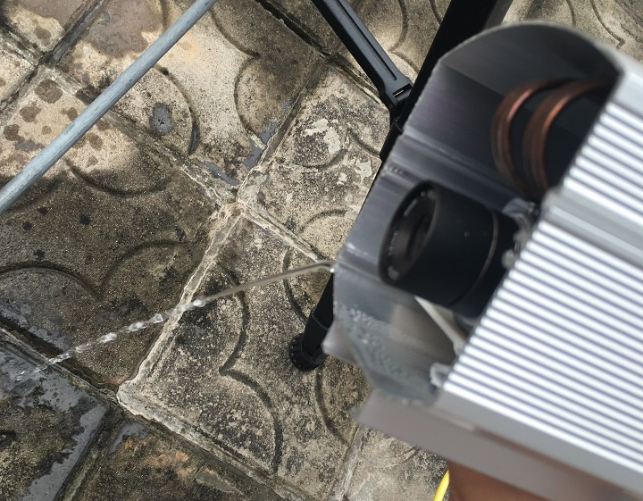
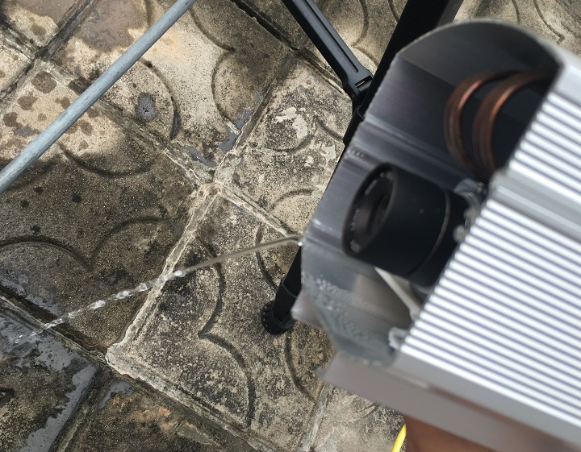

对流星的研究有着很长的历史。由于流星是持续时间很短的暂现现象，在过去的几十年，缺少合适的探测器的情况下，流星观测一直以肉眼观测为主。国际流星组织（IMO）拟定了一套标准观测流程向全世界的天文爱好者推广，使得他们可以提交有科研价值的观测报告，曾是流星雨的研究重要资料来源。
随着科学技术的发展，观测流行的手段逐渐增多。早在照相底片时代，就有许多拍摄流星的尝试。在拍摄流星的相机上加装特殊的旋转快门，就可以在进行长曝光的同时得到流星的速度信息。使用物端棱镜，也可以获得流星的光谱以供研究。
由于流星在高层大气中留下的余迹可以反射无线电波，人们发展了雷达观测流星的方法。专业的流星雷达可以探测到远超肉眼可见数目的流星，同时在白天也可以观测。使用这种方式确定了许多在白天活动的流星群。
而近十几年，视频拍摄流星的方法逐渐流行起来。CCD的性能终于开始接近人眼，使用专门的低照度相机已经可以得到与肉眼相近的极限星等，并且可以以25帧每秒的速度进行拍摄。流星的视频可以承载最多的信息量。同时，这样的观测装置对于爱好者来说也非常容易搭建。日本和美国都有相当庞大的流星监测网。
本装置主要原理是以高灵敏度的CCD摄像头拍摄天空的动态视频，使用UFOCapture软件捕捉暂现现象，并自动将视频和图片存储下来。然后利用成套的软件对视频进行分析，甄别出流星，并可以自动得出群的归属。多站观测还可以对流星体进行定轨。
这套系统的核心在于高灵敏度的CCD相机。在流星监测中，需要极低照度的相机，也就是说相机必须足够灵敏，同时不能有过多的噪点。一款常用的相机是日本Watec的902H相机。目前这款相机已经停产，只能买到二手设备。不过升级版902H Ultimate仍在生产，但是价格比较昂贵。目前国内已经有相似的产品，经测试与旧版的902H性能相近，适合进行流星观测。
软件方面，本系统采用的是UFOCapture软件套装，其中包括三个软件，只能运行在windows上，分别用于流星的拍摄、分析和定轨。由于采用触发的方式，观测过程中产生的数据量较小，但有可能漏掉一些比较暗的流星。美国的流星监测网采用的是不同的方式。软件会记录所有拍摄到的数据，这样产生的数据量较大，后期处理比较麻烦。
整套系统进行搭建时就十分注重自动化运行的功能。初期为了方便进行移动和安装，我选择小型的电脑棒驱动摄像头，并将电脑棒与摄像头一起放在监控防水壳里。这样只需要电源和无线网，流可以进行观测了。但同时，由于电脑棒存储较小，我又在室内安装了一个树莓派挂载移动硬盘作为数据服务器。
我获得天文系老师的允许将我的设备安装在教九楼顶进行长时间观测。
这样整个系统比较复杂，但是传输使用WiFi信号，链接较为不稳定。同时文件难以做到实时同步。实际上大部分的数据处理都在电脑棒上进行，树莓派的作用较为有限。于是在设备安装一个月之后我进行了改装，将电脑棒移到室内，使用BNC线传输模拟信号进入室内。

系统简化了许多。但是由于需要长距离传输模拟信号，可能引入额外的干扰。
同时，装置在运行时还遇到许多其他的问题。摄像头拍摄时会大量发热，而温度高时画面中会出现许多坏点，影响观测。于是我加装了两根热管用于将摄像头产生的热传递到铝壳上进行散热。另外，防水壳的密封性也要着重考虑。使用密封胶密封所有的缝隙，同时在铝壳内放置干燥剂防止结露。
 

由于夏季北京天气非常差，自设备正式安装以来只探测到一颗流星。但是在之前的测试中，在极好的天气情况下，摄像头可以在一晚上探测到5-10颗流星。

从视频何以看出，摄像头可以拍摄到大量的恒星，极限星等约为3.5等，对红色的恒星更为敏感。期待北京天气转好，设备正常运行时，可以拍摄到更多的流星。
使用UFOAnalyzer分析得到的视频，使用恒星与星图对齐进行校准，软件就能得到流星的位置、方向、角速度等信息。最后的结果形成一个表格供存储和进一步分析之用。